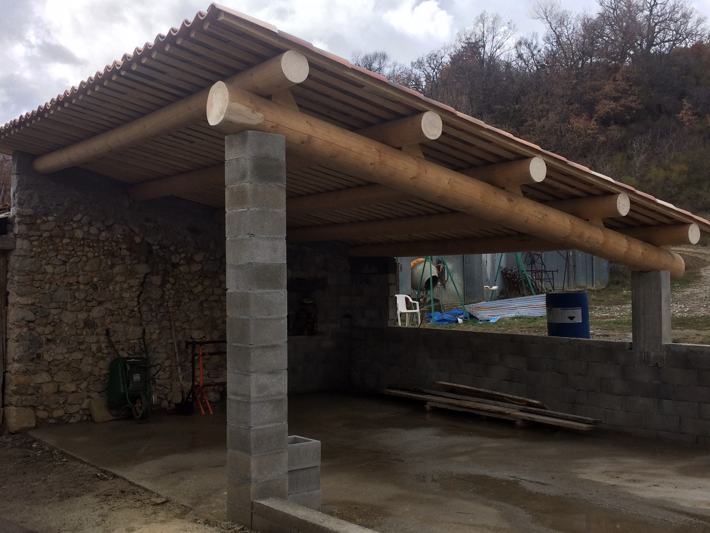
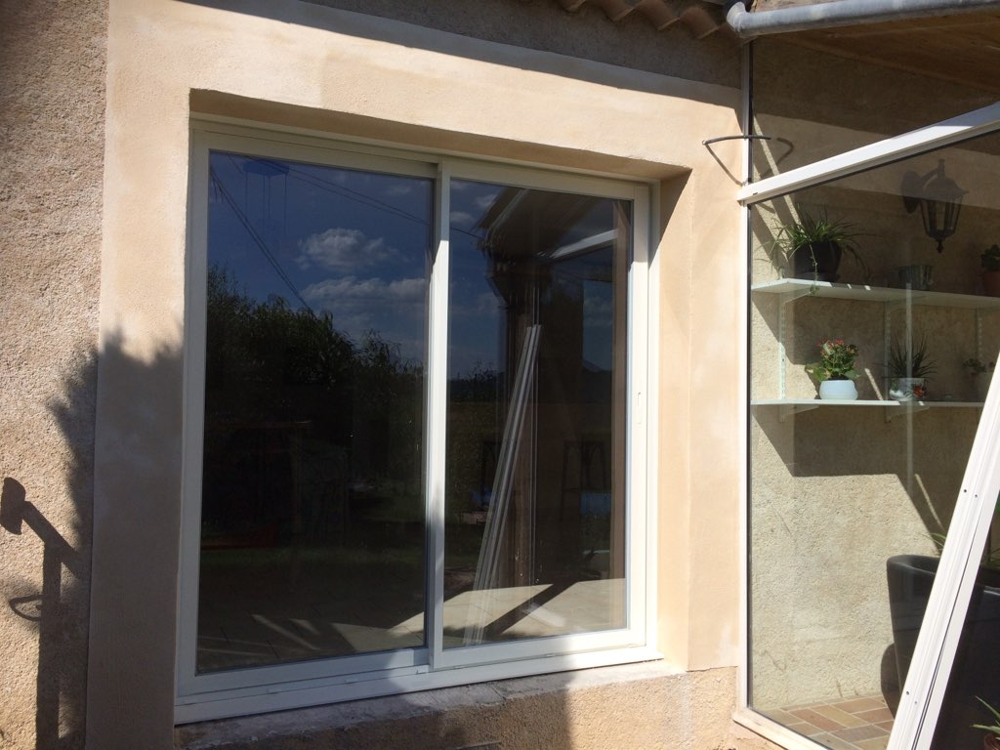
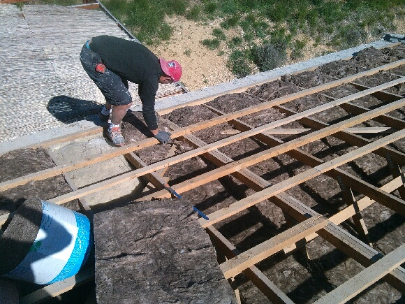
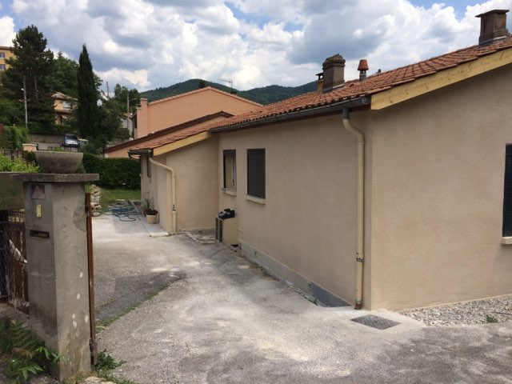
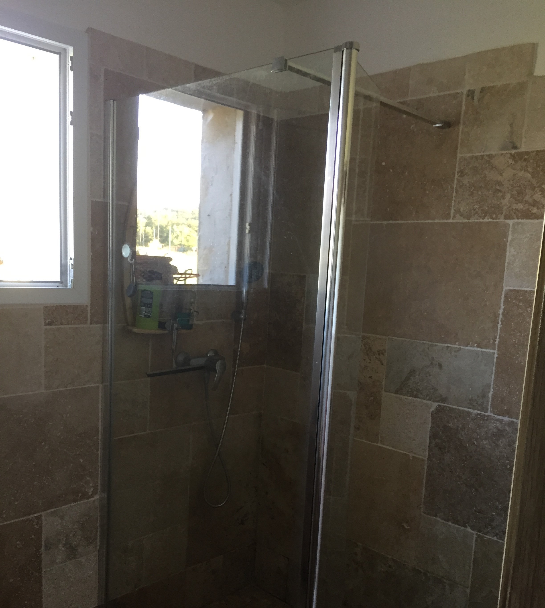
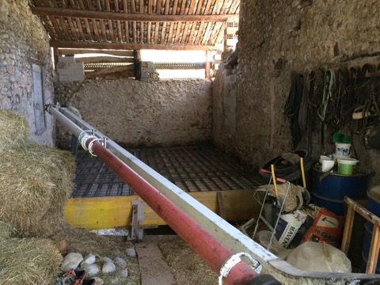
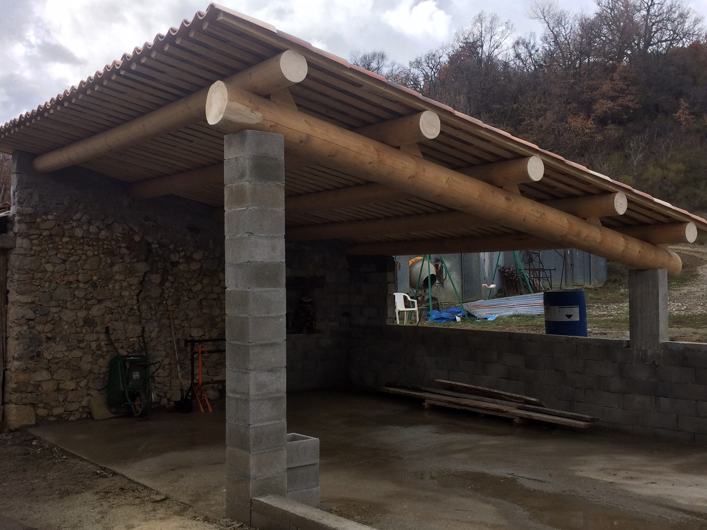
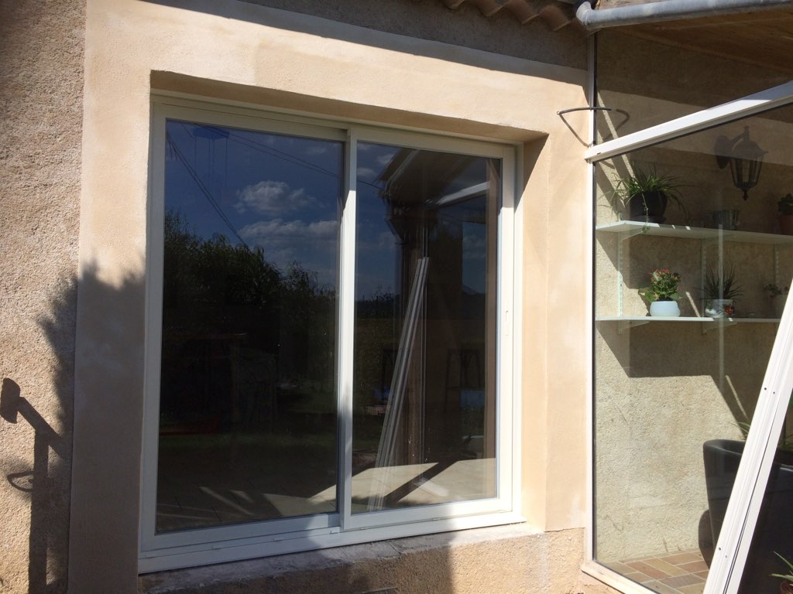
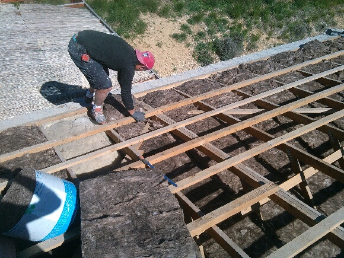
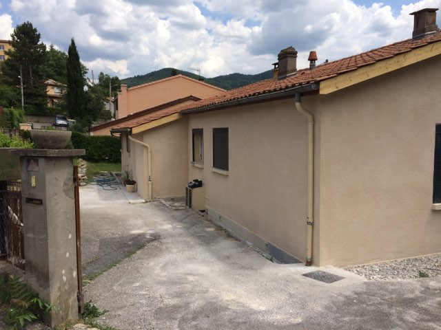
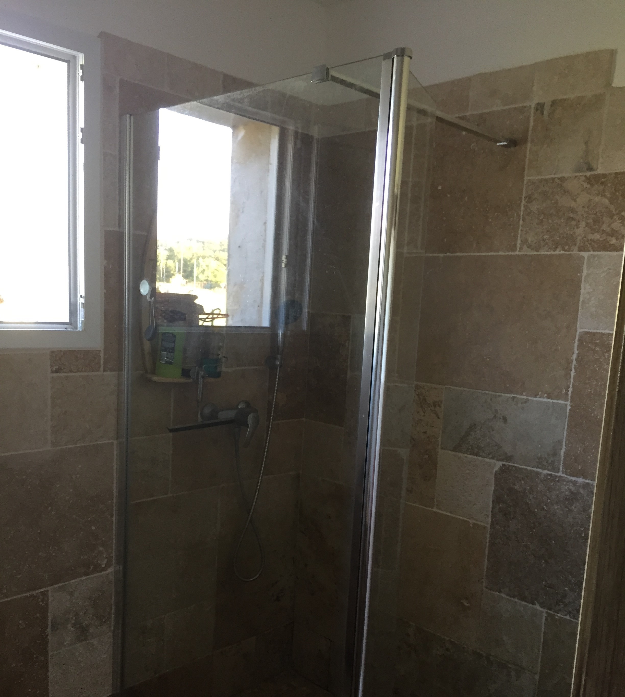
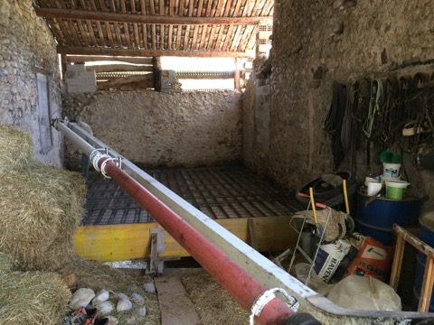
Après plusieurs années d'expériences dans le bâtiment avec les anciennes générations, titulaire d'un diplôme universitaire technologique (DUT) Génie Civil option Bâtiment, c’est en 2018 que je décide de créer ma propre entreprise, SAS BONVALET CONSTRUCTONS, située dans le Pays Dignois au coeur des Alpes de Haute Provence, plus précisément, dans la Région Sud au Sud Est de la France.
Entreprise spécialisée dans la rénovation et la création à neuf en passant de la toiture au carrelage. C'est avec plaisir que je me charge d'assurer personnellement le suivi et la coordination de votre chantier et de vous conseiller tout au long de votre projet.
S'appuyant sur un savoir-faire acquis de la construction et de la rénovation, l'entreprise BONVALET CONSTRUCTIONS est à même de vous proposer les solutions traditionnelles ou innovantes, les mieux adaptées à vos exigences et à vos moyens.
Je peux vous assurer mon investissement le plus total dans votre projet. Ma satisfaction est celle de mon client.